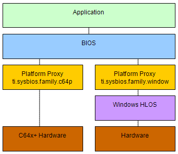

| package ti.sysbios.family.windows |
|
Native Windows SYS/BIOS Support
This package supports SYS/BIOS programs which are built and run as
native Windows executables. This enables applications to be
developed and tested on Windows using native Windows development
tools.
[
more ... ]
package ti.sysbios.family.windows [2, 0, 0, 0] {
// Windows emulation Hardware Interrupt Support Module
// Device/Family-specific delegate assignment module for
Windows emulation targets
// Windows Task Support Module
// Timer Peripherals Manager for Windows family
// TimestampProvider implementation for Windows
}
DETAILS
This package supports SYS/BIOS programs which are built and run as
native Windows executables. This enables applications to be
developed and tested on Windows using native Windows development
tools.
Although this package emulates timers and interrupts, special
consideration must be given to the fact that Windows is not a
real-time operating system. A program will not run in real-time
nor is it cycle equivalent to a target program.
On Windows, the timer period may be programmed to as little as
one millisecond, however, the actual minimum timer period is
10 - 15 milliseconds. This latency results from the Windows clock
ticking at 10 milliseconds with additional delays in the Windows
kernel. See below for more details on clock rate considerations.
This package emulates the C64+ DSP core with respect to hardware
interrupt handling and dispatching. Currently, the only supported
platform is host.platform.PC.
MOTIVATION
You can use SYS/BIOS emulation on Windows to model your application
on a high-level operating system before moving to simulators or
hardware.
When developing a software module, such as a codec, a common practice
is to first write a "Golden C" version. Once the software is stable,
the Golden C version is used as a baseline for porting to specific
target platforms.
When developing the Golden C version, it is often preferable to do
this work on a High-Level Operating System (HLOS), such as Windows.
This allows the use of HLOS tool-chains for code profiling and
validation. Providing a SYS/BIOS Emulation layer that runs on Windows
makes this effort more efficient. It allows a native SYS/BIOS application
to be built and run as a native Windows executable.
HIGH_LEVEL_DESCRIPTION
SYS/BIOS emulation is supported by implementing the platform proxy
modules for Windows. These modules are contained in the
ti.sysbios.family.windows package. These proxy modules provide
interfaces for the following:
- hardware interrupts
- thread context switching
- general purpose timers
- system clock tick counter
To implement these interfaces, some hardware functionality is
emulated in the proxy modules because Windows does not allow
direct access to the hardware.
The following figure shows a block diagram of both a C64x+
implementation and a Windows implementation.

Application code written in C that makes only SYS/BIOS API calls
should not require any changes. However, any code written for
peripheral control will need to be replaced. Peripherals are
not modeled in the emulation package.
The SYS/BIOS Kernel does not require any changes. Through XDC
configuration, the kernel binds with the appropriate proxy
modules relevant to the target platform (that is, for the
Windows platform or a hardware platform).
When building the application, XDC configuration is used to
select the run-time platform. Through configuration options,
the application can bind with the appropriate modules that are
hardware or emulation specific. This will most likely pertain
to peripheral and/or test framework code.
On hardware platforms, peripheral devices typically raise interrupts
to the CPU which then invokes the Hwi dispatcher to service it.
To emulate this behavior, the SYS/BIOS emulation package simulates an
interrupt that preempts the currently running task and invokes the
Hwi dispatcher. This is done asynchronously with respect to SYS/BIOS
tasks.
The Windows emulation package faithfully emulates the SYS/BIOS scheduler
behavior. That is to say that task scheduling will occur in the same
order on Windows as on hardware. However, interrupts are not real-time.
Therefore, interrupt preemption will differ, and this may invoke the
scheduler in a different sequence than observed when running on hardware.
Windows Win32 API functions may be invoked alongside SYS/BIOS API
functions. This should be kept to a minimum in order to encourage
code encapsulation and to maximize code reuse between hardware and
the Windows platform.
CLOCK_RATE_CONSIDERATIONS
When running on Windows Emulation, the SYS/BIOS clock is configured to
tick much slower. This is necessary because the Windows clock ticks
slower than a typical hardware clock. Thus, any code that depends on
clock ticks, instead of wall clock duration, should take this into
account during the configuration phase.
For example, if
Task_sleep(500) is
called on a hardware platform where the SYS/BIOS clock ticks every one
millisecond (resulting in a 500 millisecond sleep period), then the
sleep period should be normalized for the Windows platform using the
following formula:
windowsTicks = 500 / (Clock_tickPeriod / 1000)
where the Clock_tickPeriod is the SYS/BIOS clock tick period on Windows.
generated on Fri, 18 May 2012 23:07:53 GMT